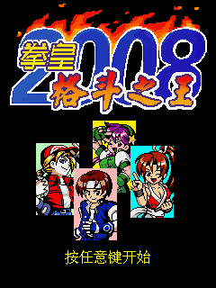
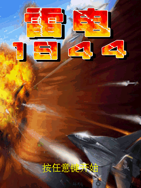
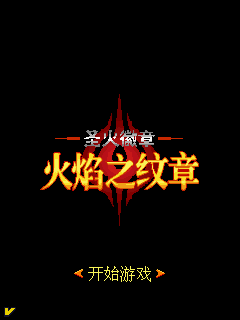

ARM / Thumb 解释执行
Unicorn 2.1.4 执行 Guest 指令，支持 ARM 与 Thumb 混排；调试构建可挂接 Capstone 做指令跟踪。
Mythroad MRP Emulator · v0.0.1
那些年装在 240×320 屏幕里的国产手机应用，大多以 MRP 的形态存在。mrpx 用 Unicorn 执行 ARM/Thumb Guest 代码，通过 Mythroad DSM 桥接恢复文件、图形、输入与计时器，把它们带回 Windows、Linux 和浏览器。



MRPX v0.0.1240 × 320What it is
不是简单套一层壳，
而是把每一次 DSM 调用
逐条翻译给宿主。
MRP 是斯凯 Mythroad 平台上的手机应用格式，流行于 2005—2010 年间的国产功能机。包内可能是脚本字节码、ARM/Thumb 原生扩展，或两者兼有。
mrpx 源自 VMRP 原仓库，延续其 ARM Guest 执行与 Mythroad DSM 桥接方向，并整理了现代仓库结构、桌面/Web 构建、测试与发布流程。项目名称、发行包与网页运行文件使用 mrpx；为兼容保留的内部标识包括 include/vmrp、VMRP 编译宏和部分运行时环境变量。
宿主构建目标是 x86-64，Guest ABI 保持 32 位 ARM。它目前不是 ESP32 移植版，也不承诺兼容所有 MRP；桌面与 Web 的回归覆盖固定启动器、MPC 测试夹具及 ARM/Thumb 样例，不代表所有设备、网络服务、音频功能或应用均可用。
Capabilities
同一份 DSM 实现同时服务桌面与 WebAssembly：桌面用 SDL2 与原生控件，浏览器用 Canvas、键盘映射与 AudioWorklet。
Unicorn 2.1.4 执行 Guest 指令，支持 ARM 与 Thumb 混排；调试构建可挂接 Capstone 做指令跟踪。
文件、图形、输入、网络、计时器与字符串，逐条映射到宿主接口；宿主侧做内存范围与 ABI 检查。
SDL2 负责画面与输入，Windows 使用 Win32 控件、Linux 使用 GTK4。虚拟键盘、横屏旋转、截图与录像只在 Windows 提供。
WebAssembly 版本提供实时画面、21 键虚拟手机键盘、Console 与 MRP 导入，需经 HTTP(S) 或 localhost 打开。
664 个 MRP 包的索引与 242 张自动截图，配合固定 ARM/Thumb 回归样本、内存边界测试与 Web 端自测页。
GPL-3.0 授权。宿主检查不是完整沙箱，运行来源不明的 MRP 仍需谨慎；兼容范围以实际回归结果为准。
Architecture
Guest 只看见 Mythroad 的函数表，宿主决定这些调用最终落在 SDL、Win32、GTK4 还是浏览器的 Canvas 与音频线程上。
桌面与 Web 共用 src/、include/ 与 assets/runtime/：前者是宿主与桥接实现，后者是预编译 Guest 模块与 MRP 种子，其清单固定在 assets/runtime/manifest.json。
索引的 MRP 应用与资源包
自动捕获的游戏截图
虚拟手机键盘映射
Windows · Linux · WebAssembly
Build
Windows x64 + PowerShell 7 为参考环境；Linux 原生与 WASM 构建见 Linux 指南。所有命令都在仓库根目录执行。
MinGW-w64 GCC 13.2（x86_64-w64-mingw32）、GNU Make、MSYS2 的 sh 与核心工具、SDL2 2.32.10 SDK、Unicorn 2.1.4。
make main 生成宿主程序；Guest 运行时与 dsm_gm.mrp 会随构建准备到运行目录。
激活固定 Emscripten 6.0.12 与 Ninja，先 make wasm-unicorn 准备后端，再 make wasm 产出网页运行文件。
make test test-build test-mrp 跑通本地验证；发布包由 make package 按平台打包。
# 桌面构建（Windows / Linux） make main # WebAssembly：先准备固定后端，再编译 make wasm-unicorn make wasm # 本机 HTTP 服务与回归 make serve make test test-build test-mrp # 打包发布（windows / linux / wasm） make package VERSION=v0.0.1 PLATFORM=wasm
Collection
Documents
项目说明按主题拆分：当前实现、来源历史、开发与研究指南。每一条限制都写在文档里，而不是留在口口相传里。
定位、当前平台、主要功能，以及桌面与 Web 的操作差异。
阅读 → HISTORY与 VMRP 原仓库的关系、维护者说明，以及历史 Guest 资料的现状。
阅读 → DEVELOPMENTWindows 参考工具链、桌面最小复现、WASM 构建与浏览器验证。
阅读 → RESEARCHMRP/EXT/FMT 结构、DSM 函数表、ARM/Thumb 实验与历史 SDK 样本。
阅读 → RELEASINGZIP 产物、版本标签、GitHub Actions 流程与校验和。
阅读 → SOURCE源码、Issue 与 Pull Request；GPL-3.0 及第三方许可说明。
GitHub ↗